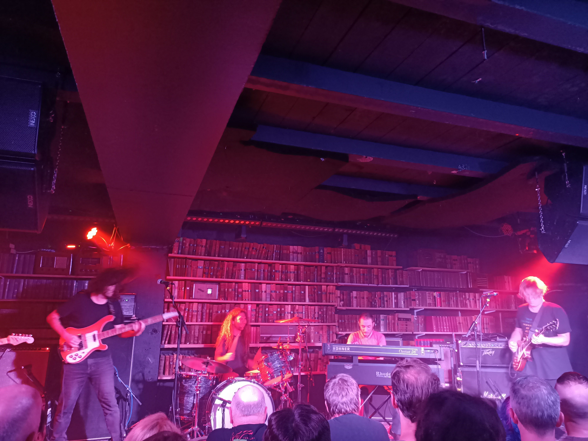

Evening
On Wednesday the 1st of February 2023, I saw Ty Segall perform at Meow located in Wellington, NZ.

I’m not obsessed with Ty Segall’s music, although he has a couple albums that I quite enjoy, those being: Goodbye Bread and Melted. You can probably see by the years these albums were released that I’m a bit out of touch with Ty’s recent releases, especially considering his relentless and prolific album-dropping nature. Regardless, I can’t pass up the opportunity to witness his musical talent.
Band
On this tour Ty was backed by the Freedom Band.
The lineup consisted of:
Ty Segall - guitar, lead vocals
Charles Moothart - drums
Mikal Cronin - bass, backing vocals
Emmett Kelly - guitar, backing vocals
Ben Boyle - Keyboard, backing vocals
Meow
Meow is a medium-sized venue located in the heart of Wellington CBD. It has a capacity of around 300 people.
The weather in Wellington has been uncharacteristically hot lately, so inside the venue was muggy and sweaty. One thing I don’t like about the layout of Meow is the bar placement. It is semi-circular and protrudes out into the crowd, which makes lining up to purchase drinks awkward.
Sound was managed well. The size, (people) density and compactness of Meow would make it a really nice place to be a sound engineer.
Interestingly, the crowd demographic contained a large proportion of middle-aged/older men, old rockers in their 50s.
I’m sober at the moment, so am unsure how much a beer costs.
Supporting Act
Jess Cornelius was the supporting act, and she absolutely killed it. Her soothing voice and the reverb applied to it left me mesmerised. By the end of her set, I had grown an absolute crush on her. She announced that she was a local, growing up in Wellington, but is now situated in the USA.
Performance
Ty started the set with a couple acoustic songs, his latest album is entirely acoustic, so I imagine starting this way supported that.
When the full band came on stage the noise exploded 🤘, it honestly sounded like a spaceship preparing for takeoff! The low-frequency engine drone powering an alien spaceship that was just hovering, preparing itself for a hyper-speed journey through space.
As the band launched into space the sludgy, oily racket of garage rock filled the void. It was powered by the dense wood of a Gibson Les Paul, and it was fucking awesome! I would describe their opening sound as Kyuss but innocent. The innocence came from the band’s ability to vocalise and layer harmonies, which added a sense of beauty to the grime that was being spewed out.
I noticed as the set went on, the tone of the music started to morph genres. They began to sound a bit harsher and sharper, similar to the Era Vulgaris era of Queens of the Stone Age. This transition continued and began to take on punk, pub-rock and fuzzy sounds. I would describe their fuzz as comparable to the Butthole Surfers from the 90s.
Thoughts
I had no idea Ty Segall’s music straddled such a wide variety of genres. His ability to take a particular feeling or sound and produce a feature-length album from it is impressive. The band put on an awesome set and are all talented musicians, various times throughout the show it was clear everyone was jamming, waiting for a queue from Ty to jump back into it.
The crowd was interesting. Old white guys seemed to be peppered throughout the mosh, and I’m unsure if they know/remember what it is like to watch live music. The mosh pit can be energetic and jumpy, and I saw a few stubborn old men trying to stake a claim on their spot in the mosh. Bro! You’re in the very front row, it’s gonna be a rough ride.
Additionally, it was a Wednesday night, so the crowd consisted of relatively sober people who had work the next day or excruciatingly drunk students/young people. So, it was kind of a strange mix and honestly didn’t work well.
Final Rating
Band: 3/5 (good)
Venue: 2/5 (not bad)
Evening: 3/5 (good)
Rating System
1 (bad); 2 (not bad); 3 (good); 4 (really good); 5 (amazing)